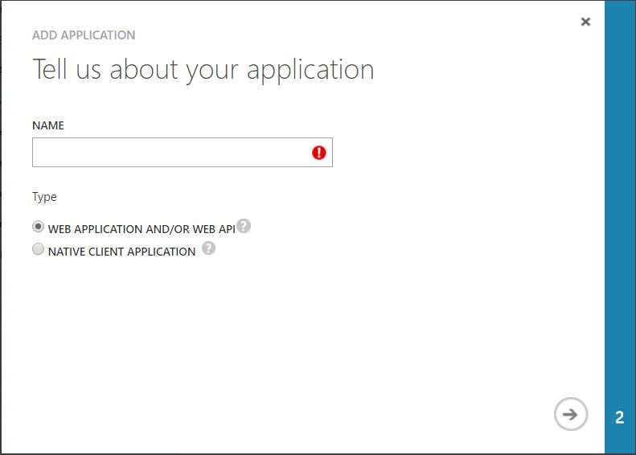
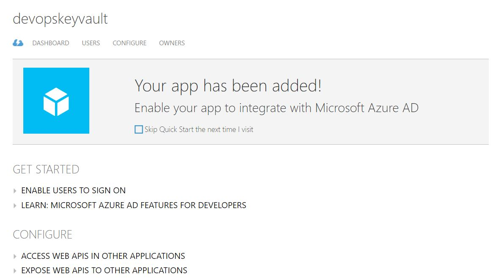

In order to quickly deploy VM's on your azure subscription, you can use JSON templates. These templates are parsed against microsofts API.
However, creating seperate JSON's for all your customers might be time consuming.
Therefore, a tutorial how to get VM's deployed against your azure subscription.
P.S. If some steps are not working, or you need some detailed infomation, please contact me :)
1. Create a local VM on your desktop, CentOS7 in my case, and install terraform.
2. Login to the azure management portal manage.windowsazure.com
3. Click active directory --> your subscription --> applications, and click add:

4. Give it a name, click next and give it a random url, since we're not using a url for it yet.
5. Complete the creation of the object. My object is called devopskeyfault:

6. Click on your created object, and click configure. You can see the details here you need in your terraform configuration: